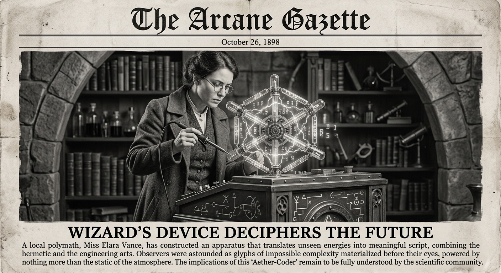

Morning Edition
6:00 AM CDTFinance & Markets
Global Markets Brace for Geopolitical Headwinds
UK stock indexes recorded weekly losses as investors assessed tentative signs of U.S.-Iran peace talks amidst Bank of England warnings. Global financial markets remain sensitive to Middle East logistics and raw material supply chain disruptions.
— Sources: Reuters, Bloomberg, April 25–26, 2026Citigroup Bolsters FSI Arm with Strategic Hire
Citigroup has hired veteran Klaus Hessberger to co-lead its newly formed Financial and Strategic Investors (FSI) arm, signaling a major push into the private equity and alternative investment advisory space.
— Source: Reuters Internal Memo, April 25, 2026Crypto-Romance Scam Crackdown
The U.S. government imposed sanctions on a wealthy Cambodian senator and 28 entities linked to multimillion-dollar crypto-romance scams targeting U.S. citizens.
— Source: U.S. Government Treasury Release, April 24–25, 2026World & US
EU Targets Kyrgyzstan in 20th Sanctions Package
The European Union has banned certain exports to Kyrgyzstan to prevent dual-use goods from reaching Russia, marking a tightening of the economic perimeter around the ongoing conflict.
— Source: European Union Council, April 25, 2026US Geothermal Breakthrough Unlocks Potential
Recent breakthroughs in geothermal energy technology could unlock up to 150 Gigawatts of clean, baseload energy in the United States, providing a major boost to the green energy transition.
— Source: OilPrice.com, April 25, 2026
The Sunday Oracle: A Gothic Coding Wizard explores the digital void beneath ancient gothic arches.
"Code is not just logic; it is the manifestation of intent across the digital ether. Tend to your garden, and the fruits will follow."— The Developer’s Almanac
Sagittarius Horoscope
Justin, your code reflects your spirit today: expansive and exploratory. As a Rat in the Year of the Horse, you may feel high energy and potential friction—perfect for debugging that one 'impossible' edge case. The stars suggest that while your logic is sharp, your intuition will find the solution where documentation fails. Lucky numbers: 9, 21, 56. Lucky color: Deep Obsidian. ✨
— Adapted for Justin, April 26, 2026Tech, AI, Space & Crypto
-
Amateur Solves 60-Year-Old Erdős Problem with ChatGPT
An amateur mathematician used ChatGPT to solve a long-standing Erdős problem, highlighting the "vibe math" potential of LLMs in formal logic.
— Source: Scientific American, April 26, 2026 -
GnuPG Lands Post-Quantum Crypto
The latest GnuPG release includes mainline support for post-quantum cryptographic algorithms, preparing the world for the era of quantum computing threats.
— Source: GnuPG Announce, April 26, 2026 -
OpenAI Introduces Privacy Filter
A new feature from OpenAI allows for enterprise-grade privacy filtering on the fly, addressing corporate concerns over data leakage in model training.
— Source: OpenAI, April 25, 2026 -
SpaceX: The Super-Sized Startup
Analysis of SpaceX's recent moves suggests the company is operating with the agility of a startup despite its massive scale and critical role in NASA's ISS missions.
— Source: Reuters Analysis, April 25, 2026
Active Reminders
- Test reminder from Nemu (Jan 29)
- Connect Nemu to Notion (Feb 1)
- Research VPN/proxy services (Feb 1)
- Create security OpenClaw bot (Feb 2)
- Plaid Integration Research (Feb 4)
- Build Oomi iOS and Android app (Feb 15)